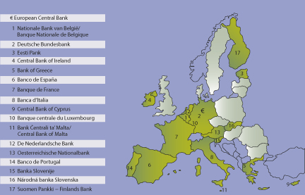
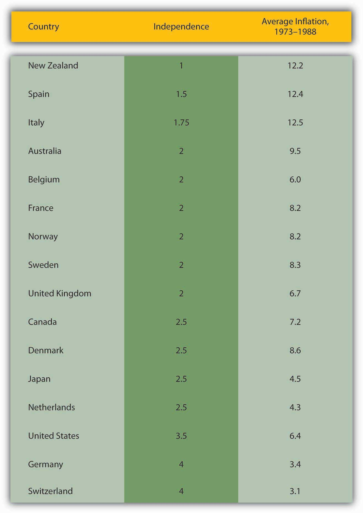

By the end of this chapter, students should be able to:
A central bankA bank that regulates the money supply, interest rates, and/or other financial institutions on behalf of the government. is a bank under some degree of government control that is generally charged with
Central banks also often act as the national government’s banker by holding its deposits and making payments on its behalf. During its 200-plus-year existence, the United States has had three different central banks and two periods, one short and one extremely long, with no central bank.
Chartered by the federal government in 1791, the Bank of the United States (BUS) worked in conjunction with the U.S. Treasury secretary to act as a lender of last resort and a regulator of commercial banks. Specifically, it helped Alexander Hamilton, America’s first Secretary of the Treasury,www.treasury.gov/about/history/Pages/ahamilton.aspx to stymie the Panic of 1792. It also returned the notes of commercial banks for redemption into gold and silver (the era’s base moneyThe most elementary form of money in a given society at a given time. The only type of money that can compose a bank’s primary reserve.), thereby regulating commercial banks’ reserve ratios and hence the money supply. Owned by private shareholders, the BUS was quite independent, a good trait for a central bank to have, as we’ll see. Its very independence and power to regulate commercial banks, however, made it unpopular in some influential political circles. Its charter was not renewed when it expired in 1811. The government’s difficulties financing the War of 1812 (aka the Second War for Independence) convinced many that the country needed a new central bank. As a result, the government chartered the Bank of the United States (informally called the Second Bank or SBUS) in 1816. Insufficiently independent of the government at first, the SBUS, which like the BUS was headquartered in Philadelphia but had more numerous branches, stumbled by allowing commercial banks to increase their lending too much. It also suffered from internal agency problems, particularly at its branch in Baltimore. When a financial panic struck in late 1818 and early 1819, it failed to prevent a recession and debt deflation. Private stockholders reasserted control over the bank, placing it under the able direction of Nicholas Biddle, who successfully prevented the British economic meltdown of 1825 from spreading to America. Under Biddle, the SBUS also became an effective regulator of the nation’s commercial banks, which by the 1820s numbered in the hundreds. Like the BUS before it, the SBUS paid for its diligence with its life. Aided by many commercial bankers, particularly those in Philadelphia’s financial rival Manhattan, and America’s traditional distaste for powerful institutions, Andrew Jackson vetoed the act rechartering it. (The SBUS continued its corporate life under a Pennsylvania charter, but it no longer had nationwide branches and was no longer the nation’s central bank. It went bankrupt a few years later.)
From 1837 until late 1914, the United States had no central bank. Private institutions cropped up to clear checks and transfer funds over long distances. The Treasury kept its funds in commercial banks and in the hands of its tax collectors and left bank regulation to the market (deposit and note holders and stockholders) and state governments. The monetary base (gold and silver) it left largely to the whims of international trade. It could do so because the United States and most of the world’s other major economies were on a gold and/or silver standard, meaning that their respective units of account were fixed in terms of so many grains of the precious stuff and hence fixed against each other.This does not mean that the exchange rate didn’t change, merely that it stayed within a narrow band of transaction costs. The system was self-equilibrating. In other words, discretionary monetary policy was unnecessary because gold and silver flowed into or out of economies automatically, as needed. (The price level could move up or down in the short-term but eventually reverted to the long-term mean because deflation [inflation] created incentives [disincentives] to bring more gold and silver to market.) Nations today that maintain fixed exchange rates also find no need for a central bank, but instead use a simpler institution called a currency board. Countries that use a foreign currency as their own, a process called dollarizationThe process of using a foreign country’s money as a domestic currency. Often this entails a country adopting the U.S. dollar as a medium of exchange and unit of account., need nothing at all because they essentially outsource their monetary policy to the central bank of the nation whose currency they use. (That is often the United States, hence the term dollarization.) Other central banking functions, like clearing checks and regulating financial institutions, can be performed by other entities, public and private. The function of lender of last resort typically cannot be fulfilled, however, by anything other than a central bank.
Indeed, the biggest problem with the U.S. arrangement was that there was no official systemwide lender of last resort, nobody to increase the money supply or lower interest rates in the face of a shock. As a result, the United States suffered from banking crises and financial panics of increasing ferocity beginning soon after the Second Bank’s demise: 1837, 1839, 1857, 1873, 1884, 1893, and 1907. Most of those panics were followed by recessions and debt deflation because there was no institution wealthy enough to stop the death spiral (a shock, increased asymmetric information, decline in economic activity, bank panic, increased asymmetric information, decline in economic activity, unanticipated decline in the price level). In 1907, J. P. Morgan (the man, with help from his bank and web of business associates) mitigated, but did not prevent, a serious recession by acting as a lender of last resort. The episode convinced many Americans that the time had come to create a new central bank lest private financiers come to wield too much power. Anyone with the power to stop a panic, they reasoned, had the power to start one. Americans still feared powerful government institutions too, however, so it took another six years (1913) to agree on the new bank’s structure, which was highly decentralized geographically and chock full of checks and balances. It took another year (1914) to get the bank, often called simply the Fed or the Federal Reserve, into operation.
The Federal Reserve is composed of twelve numbered districts, each with its own Federal Reserve Bank: Boston (1), New York (2), Philadelphia (3), Cleveland (4), Richmond (5), Atlanta (6), Chicago (7), St. Louis (8), Minneapolis (9), Kansas City (10), Dallas (11), and San Francisco (12). Except for regions 1 and 3, each of those district banksOne of the twelve banks comprising the Federal Reserve system. also operates one or more branches. For example, the Federal Reserve Bank of New York (FRBNY) maintains a branch in Buffalo; the Atlanta Fed has branches in Nashville, Birmingham, New Orleans, Jacksonville, and Miami. The Fed’s headquarters is located in Washington, DC.For an interactive map of the system, browse www.federalreserve.gov/otherfrb.htm.
Missouri is the only state with two federal reserve district banks. This was thought necessary to secure the votes of Missouri congressional representatives for the bill. (So much for public interest!) The districts don’t seem to be evenly balanced economically. They were, more or less, when the legislation was passed before World War I, but since then, the West Coast, Southwest, and Southeast (Sunbelt) have grown in economic importance relative to the Northeast and old Midwest (Rustbelt). (District 3 encompasses only southern New Jersey and eastern Pennsylvania, an area that is no longer the economic powerhouse it once was.) Rather than redistrict, the Fed has simply shifted resources over the years toward the larger and economically more potent districts.
Each Federal Reserve bank is owned (but not entirely controlled) by the commercial banks in its district, and they are members of the system. Those banks, which include all nationally chartered banks and any state banks that choose to join, own restrictedThe Fed’s stock is not traded in public markets and pays an annual dividend no higher than 6 percent. shares in the Fed, which they use to elect six district bank directors, three of whom have to be professional bankers and three of whom have to be nonbank business leaders. The Board of Governors in Washington selects another three directors, who are supposed to represent the public interest and are not allowed to work for or own stock in any bank. The nine directors, with the consent of the board, then appoint a president.
The twelve district banks do mostly grunt work:
The FRBNY is the most important of the district banks because, in addition to the tasks listed above, it also conducts so-called open market operations, buying and selling government bonds (and occasionally other assets) on behalf of the Federal Reserve system and at the behest of headquarters in Washington. Moreover, the FRBNY is a member of the Bank for International Settlements (BIS)www.bis.org and safeguards over $100 billion in gold owned by the world’s major central banks. Finally, the FRBNY’s president is the only permanent member of the Federal Open Market Committee (FOMC).
The FOMC is composed of the seven members of the Board of Governors, the president of the FRBNY, and the presidents of the other district banks, though only four of the last-mentioned group can vote (on a rotating basis). The FOMC meets every six weeks or so to decide on monetary policy, specifically on the rate of growth of the money supply or the federal funds target rate, an important interest rate, both of which are controlled via so-called open market operations. Until recently, the Fed had only two other tools for implementing monetary policy, the discount rate at which district banks lend directly to member banks and reserve requirements. Prior to the crisis of 2007–2008, neither was an effective tool for a long time, so the market and the media naturally concentrated on the FOMC and have even taken to calling it “the Fed,” although technically it is only one part of the central bank. The head of the Fed is the Board of Governors, which is composed of a chairperson, currently Ben Bernanke, and six governors.www.federalreserve.gov/aboutthefed/bios/board/bernanke.htm All seven are appointed by the president of the United States and confirmed by the U.S. Senate. The governors must come from different Federal Reserve districts and serve a single fourteen-year term. The chairperson is selected from among the governors and serves a four-year, renewable term. The chairperson is the most powerful member of the Fed because he or she controls the board, which controls the FOMC, which controls the FRBNY’s open market operations, which influences the money supply or a key interest rate. The chairperson also effectively controls reserve requirements and the discount rate. He (so far no women) is also the Fed’s public face and its major liaison to the national government. Although de jure power within the Fed is diffused by the checks and balances discussed above, today de facto power is concentrated in the chairperson. That allows the Fed to be effective but ensures that a rogue chairperson cannot abuse his power.
Historically, some chairpersons have made nebbishes look effective, while others, including most recently Alan Greenspan, have been considered, if not infallible demigods, then at least erudite gurus. Neither extreme view is accurate because all chairpersons have relied heavily on the advice and consent of the other governors, the district banks’ presidents, and the Fed’s research staff of economists, which is the world’s largest. The researchers provide the chairperson and the entire FOMC with new data, qualitative assessments of economic trends, and quantitative output from the latest and greatest macroeconomic models. They also examine the global economy and analyze the foreign exchange market, on the lookout for possible shocks from abroad. Fed economists also help the district banks to do their jobs by investigating market and competition conditions and engaging in educational and other public outreach programs.
The Fed is the world’s most important central bank because the United States has been the world’s most important economy since at least World War II. But the Maastricht Treaty created a contender:www.eurotreaties.com/maastrichtext.html the European Central Bank (ECB),www.ecb.int/home/html/index.en.html the central bank of the euro area, the seventeen major countries that have adopted the euro as their unit of account: Austria, Belgium, Cyprus, Estonia, Finland, France, Germany, Greece, Ireland, Italy, Luxembourg, Malta, the Netherlands, Portugal, Slovakia, Slovenia and Spain (see Figure 14.1 "The Eurozone").
Figure 14.1 The Eurozone
The ECB is part of a larger system, the European System of Central Banks (ESCB), some of the countries of which (Bulgaria, Czech Republic, Denmark, Estonia, Cyprus, Latvia, Lithuania, Hungary, Malta, Poland, Romania, Slovakia, Sweden, and the United Kingdom) are part of the European Union but have opted out of the currency union. Other countries in the ESCB, including Bulgaria, Denmark, Latvia, and Lithuania, currently link their national currencies to the euro.
The ECB or Eurosystem was consciously modeled on the Fed, so it is not surprising that their structures are similar. Each nation is like a Federal Reserve district headed by its national central bank (NCB). At its headquarters in Frankfurt sits the ECB’s Executive Board, the structural equivalent of the Fed’s Board of Governors, and the Governing Council, which like the Fed’s FOMC makes monetary policy decisions. The ECB is more decentralized than the Fed, however, because the NCBs control their own budgets and conduct their own open market operations. Also unlike the Fed, the ECB does not regulate financial institutions, a task left to each individual country’s government. The two central banks, of course, also differ in many matters of detail. The ECB was led by Frenchman Jean-Claude Trichet from 2003 until November 2011, when he was replaced by Italian economist and central banker Mario Draghi.en.wikipedia.org/wiki/President_of_the_European_Central_Bank#Trichet Unless he resigns, like the ECB’s first president, Dutchman Wim Duisenberg did (1998–2003), Draghi will serve a single 8-year term. Like the other presidents, he was appointed by the European Council, which is comprised of the heads of state of the EU member states, the president of the European Commission, and the president of the European Council.
Three other important central banks, the Bank of England, the Bank of Japan, and the Bank of Canada, look nothing like the Fed or the ECB because they are unitary institutions with no districts. Although they are more independent from their respective governments than in the past, most are not as independent as the Fed or the ECB. Despite their structural differences and relative dearth of independence, unit central banks like the Bank of Japan implement monetary policy in ways very similar to the Fed and ECB.Dieter Gerdesmeier, Francesco Mongelli, and Barbara Roffia, “The Eurosystem, the US Federal Reserve and the Bank of Japan: Similarities and Differences,” ECB Working Paper Series No. 742 (March 2007).
What exactly is central bank independenceIn this context, a central bank is independent to the degree that it need not follow the dictates of the government that created it. (sometimes referred to as autonomyCentral bank autonomy is largely synonymous with central bank independence.) and why is it important? Independence means just that, independence from the dictates of government, the freedom to conduct monetary policy as central bankers (and not politicians) wish. Why does it matter whether a central bank is independent or not? Figure 14.2 "Central bank independence and inflation", the results of a classic study, reveals all.
Figure 14.2 Central bank independence and inflation
Note that as a country’s central bank becomes more independent (as its independence score increases from 1 to 4), its average inflation rate drops. The negative relationship is quite pronounced, producing a correlation coefficient of −.7976. The correlation is so strong, in fact, that many believe that independence causes low inflation. (Correlation alone cannot establish causation, but a strong correlation coefficient is a necessary first step in establishing causation.) Some scholars have argued, however, that the results were rigged, that researchers simply assigned central banks with a good record on inflation with a high independence score. (If this is true, it would destroy the causal implications of the study.) While it is true that rating a central bank’s independence is something of an art, there are clear rules to follow. Where there is no rule of law, as in dictatorships, there can be no independence. The central banker must do as he or she is instructed or be sacked or possibly shot. Little wonder, then, that many Latin American and African countries had very high rates of inflation when they were ruled by dictators.
In nations with rule of law, like those in Figure 14.2 "Central bank independence and inflation", it’s best to follow the purse. If a central bank has control of its own budget, as the Fed and ECB (and some of its predecessors, like the Bundesbank of Germany) do, then the bank is quite independent because it is beholden to no one. The Fed is slightly less independent than the ECB, however, because its existence is not constitutionally guaranteed. (Indeed, as we learned above, the United States had a nasty habit of dispatching its early central banks.) Congress could change or abolish the Fed simply by passing a law and getting the president to sign it or it could override his veto. The ECB, by contrast, was formed by an international treaty, changes to which must be ratified by all the signatories, a chore and a half to achieve, to be sure! Finally, central banks led by people who are appointed are more independent than those led by popularly elected officials. Long, nonrenewable terms are better for independence than short, renewable ones, which tend to induce bankers to curry the favor of whoever decides their fate when their term expires.
None of this is to say, however, that determining a central bank’s independence is easy, particularly when de jure and de facto realities differ. The Bank of Canada’s independence is limited by the fact that the Bank Act of 1967 made the government ultimately responsible for Canada’s monetary policy. But, in fact, the Canadian government has allowed its central bank to run the money show. The same could be said of the Bank of England. The Bank of Japan’s independence was strengthened in 1998 but the Ministry of Finance, a government agency, still controls part of its budget and can request delays in monetary policy decisions. The current de facto independence of those banks could be undermined and quite quickly at that.
“Bank of Japan Faces Test of Independence,” Wall Street Journal, August 10, 2000.“The political storm over a possible interest rate increase by the Bank of Japan is shaping up to be the biggest challenge to the central bank’s independence since it gained autonomy two years ago. Members of the ruling Liberal Democratic Party stepped up pressure on the bank to leave the country’s interest rates where they are now.” Why does the Liberal Democratic Party (LDP) want to influence the Bank of Japan’s (BoJ’s) interest rate policy? Why was the issue important enough to warrant a major article in a major business newspaper?
The LDP wanted to influence the BoJ’s interest rate policy for political reasons, namely, to keep the economy from slowing, a potential threat to its rule. This was an important story because the de facto “independence” of the BoJ was at stake and hence the market’s perception of the Japanese central bank’s ability to raise interest rates to stop inflation in the face of political pressure.
Why, when left to their own devices, are central bankers tougher on inflation than governments, politicians, or the general populace? Partly because they represent bank, business, and creditor interests, all of which are hurt if prices rise quickly and unexpectedly. Banks are naturally uncomfortable in rising interest rate environments, and inflation invariably brings with it higher rates. Net creditors—economic entities that are owed more than they owe—also dislike inflation because it erodes the real value of the money owed them. Finally, businesses tend to dislike inflation because it increases uncertainty and makes long-term planning difficult. Central bankers also know the damage that inflation can do to an economy, so a public interest motivation drives them as well.
People and the politicians they elect to office, on the other hand, sometimes desire inflation. Many households are net debtors, meaning that they owe more money than is owed to them. Inflation, they know, will decrease the real burden of their debts. In addition, most members of the public do not want the higher interest rates that are sometimes necessary to combat inflation because it will cost them money and perhaps even their jobs. They would rather suffer from some inflation, in other words, rather than deal with the pain of keeping prices in check.
Politicians know voter preferences, so they, too, tend to err on the side of higher rather than lower inflation. Politicians also know that monetary stimulus—increasing the money supply at a faster rate than usual or lowering the interest rate—can stimulate a short burst of economic growth that will make people happy with the status quo and ready to return incumbents to office. If inflation ensues and the economy turns sour for awhile after the election, that is okay because matters will likely sort out before the next election, when politicians will be again inclined to pump out money. Some evidence of just such a political business cycle in the postwar United States has been found.See, for example, Jac Heckelman, “Historical Political Business Cycles in the United States,” EH.Net Encyclopedia (2001). eh.net/encyclopedia/article/heckelman .political.business.cycles. The clearest evidence implicates Richard Nixon. See Burton Abrams and James Butkiewicz, “The Political Business cycle: New Evidence from the Nixon Tapes,” University of Delaware Working Paper Series No. 2011-05 (2011). www.lerner.udel.edu/sites/default/files/imce/economics/Working Papers/2011/UDWP 2011-05.pdf Politicians might also want to print money simply to avoid raising direct taxes. The resultant inflation acts like a tax on cash balances (which lose value each day) and blame can be cast on the central bankers.
All in all, then, it is a good idea to have a central bank with a good deal of independence, though some liberals complain that independent central banks aren’t sufficiently “democratic.” But who says everything should be democratic? Would you want the armed forces run by majority vote? Your company? Your household? Have you heard about the tyranny of the majority?xroads.virginia.edu/~hyper/detoc/1_ch15.htm That’s when two wolves and a sheep vote on what’s for dinner. Central bank independence is not just about inflation but about how well the overall economy performs. There is no indication that the inflation fighting done by independent central banks in any way harms economic growth or employment in the long run. Keeping the lid on inflation, which can seriously injure national economies, is therefore a very good policy indeed.
Another knock against independent central banks is that they are not very transparent. The Fed, for example, has long been infamous for its secrecy. When forced by law to disclose more information about its actions sooner, it turned to obfuscation. To this day, decoding the FOMC’s press releases is an interesting game of semantics. For all its unclear language, the Fed is more open than the ECB, which will not make the minutes of its policy meetings public until twenty years after they take place. It is less transparent, however, than many central banks that publish their economic forecasts and inflation rate targets. Theory suggests that central banks should be transparent when trying to stop inflation but opaque when trying to stimulate the economy.
Bremner, Robert. Chairman of the Fed: William McChesney Martin Jr. and the Creation of the American Financial System. New Haven, CT: Yale University Press, 2004.
Bruner, Robert, and Sean Carr. The Panic of 1907: Lessons Learned from the Market’s Perfect Storm. Hoboken, NJ: John Wiley and Sons, 2007.
Clark, William Roberts. Capitalism, Not Globalismml: Capital Mobility, Central Bank Independence, and the Political Control of the Economy. Ann Arbor, MI: University of Michigan Press, 2005.
Meltzer, Allan. A History of the Federal Reserve, Volume 1: 1913–1951. Chicago, IL: University of Chicago Press, 2003.
Timberlake, Richard. Monetary Policy in the United States: An Intellectual and Institutional History. Chicago, IL: University of Chicago Press, 1993.